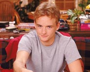

Francis - Christopher Masterson
Full Name: Christopher Kennedy Masterson
Born: 21st January 1980, Garden City, New York, USA.
Family: Brother (Danny - from "That'70's Show"),
Movies/T.V shows Chris has been on:
Films
Dragonheart II (2000)
Girl (1999)
American History X (1998)
Campfire Tales (1997)
My Best Friend's Wedding (1997)
The Sunchaser (1996)
Cutthroat Island (1995)
Mamma ci penso io (1992)
Singles (1992)
Television
The Road Home (1994)
Millennium (1998) in "Room With No View"
The Pretender (1996) in "Toy Surprise" (1998)
Touched by an Angel (1994) "Children of the Night" (1997)
Other Things:
* Chris is dating Laura Prepon from "That '70's Show".
* He had a small role in the film "Beethoven's 2nd." However, his older brother Danny had a leading role in the film. The two were not playing brothers in the movie, so neither one mentioned to anyone that they were related. When producers went to view the film they noticed the resemblance and re-shot all of Chris's scenes with another actor.
Created by Michelle!
Home | Photos | Cast Bio's | Links | Quotes